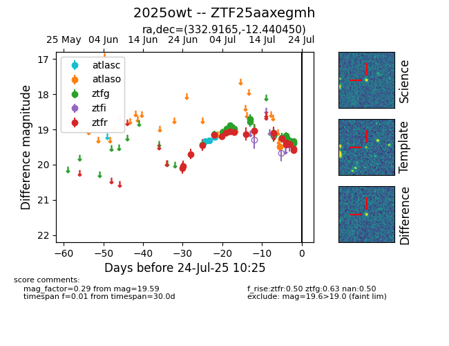

Target 2025owt at 2025-07-24 10:25, see:
FINK: fink-portal.org/2025owt
Lasair: lasair-ztf.lsst.ac.uk/objects/2025owt
ALeRCE: alerce.online/object/2025owt
TNS: wis-tns.org/object/2025owt
YSE: ziggy.ucolick.org/yse/transient_detail/2025owt
alt names
ZTF25aaxegmh (ztf,fink)
2025owt (tns,yse)
coordinates:
equatorial (ra, dec) = (332.9165,-12.44045)
galactic (l, b) = (46.3579,-49.86685)
photometry
last atlasc=19.21, atlaso=19.50, ztfg=19.38, ztfr=19.59
3 atlasc, 1 atlaso, 20 ztfg, 19 ztfr detections
